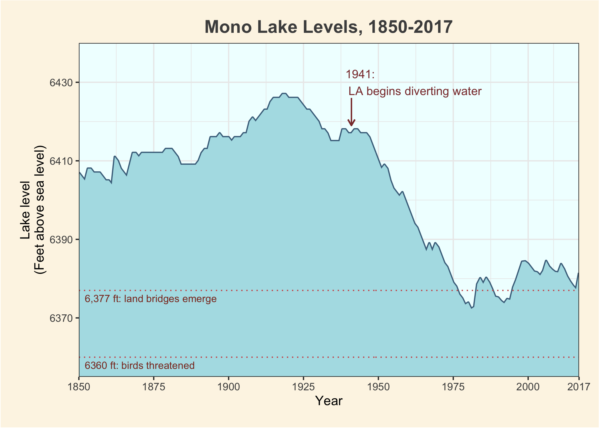

ggplot2 - graphing Mono Lake data!

Making a publication quality graph of Mono Lake levels over time
Mono Lake is a mid elevation lake in the Owens Valley, California. In the 20th century, the Owens River became an important water source for Los Angeles, and Mono Lake water levels dropped significantly. Lake level monitoring started in (https://www.monobasinresearch.org/data/levelyearly.php)[1850], and a clean data set gives us the opportunity to practice our ggplot skills!
First, we’ll do a bit of wrangling with the tidyverse and the awesome janitor package:
# Load packages
library(tidyverse)
library(janitor)
# Load in data
mono_lake_annual_levels <- read_csv("Mono Lake Annual Levels.csv",
skip = 5)Currently, the years are considered characters by r. For our purposes, we can just convert them to numbers.
# Clean data
clean_mono_levels <- mono_lake_annual_levels %>%
clean_names() %>%
mutate(year = as.numeric(year))Let’s make a graph!
# ggplot begins simple...
ggplot(data = clean_mono_levels,
aes(x = year,
y = lake_level_feet_above_sea_level)
) +
labs(x = "Year",
y = "Lake level\n(Feet above sea level)",
title = "Mono Lake Levels, 1850-2017"
) +
geom_line(color = "skyblue4",
size = 1) +
# Ribbon plots let us fill in the lake level, for a more intuitive volume feel
geom_ribbon(aes(ymin = 6355,
ymax = lake_level_feet_above_sea_level),
fill = "powderblue") +
theme_bw() +
# We can change the background and margin color with arguments in `theme`
theme(panel.background = element_rect(fill = "azure1"),
panel.border = element_rect(fill = NA),
plot.background = element_rect(fill = "oldlace"),
# And change the border width
plot.margin = margin(t = 0.6,
r = 0.6,
b = 0.6,
l = 0.6,
unit = "cm"),
# And add a few adjustments to the title text
plot.title = element_text(face = "bold",
hjust = 0.5,
size = 15,
color = "grey30"),
) +
# One thing ggplot annoyingly does is expand the axes beyond your limits. We can change this using the `expand = c(0,0)` argument
scale_x_continuous(limits = c(1850, 2017),
breaks = c(1850, 1875, 1900, 1925, 1950, 1975, 2000, 2017),
expand = c(0, 0))+
scale_y_continuous(limits = c(6355, 6440),
expand = c(0, 0),
breaks = seq(6350, 6430, 20)
) +
# For easier interpretation, we can add a few important annotations highlighting events:
annotate("text",
label = "1941:\n LA begins diverting water",
y = 6430,
x = 1939,
hjust = 0,
size = 3.5,
color = "indianred4") +
# And add some reference lines
geom_line(aes(y = 6360),
color = "indianred3",
linetype = "dotted") +
annotate("text",
label = "6,377 ft: land bridges emerge",
x = 1852,
y = 6375,
color = "tomato4",
size = 3,
hjust = 0) +
geom_line(aes(y = 6377),
color = "indianred3",
alpha = 1,
linetype = "dotted") +
annotate("text",
label = "6360 ft: birds threatened",
x = 1852,
y = 6358,
color = "tomato4",
size = 3,
hjust = 0) +
# geom_segment has an option to create an arrow!
geom_segment(aes(x = 1941,
xend = 1941,
y = 6419,
yend = 6426),
color = "indianred4",
arrow = arrow(ends = "first",
type = "open",
length = unit(0.2,"cm")
)
)
# And when we're done, we can save the plot using ggsave.
ggsave("good_graph.png", last_plot())